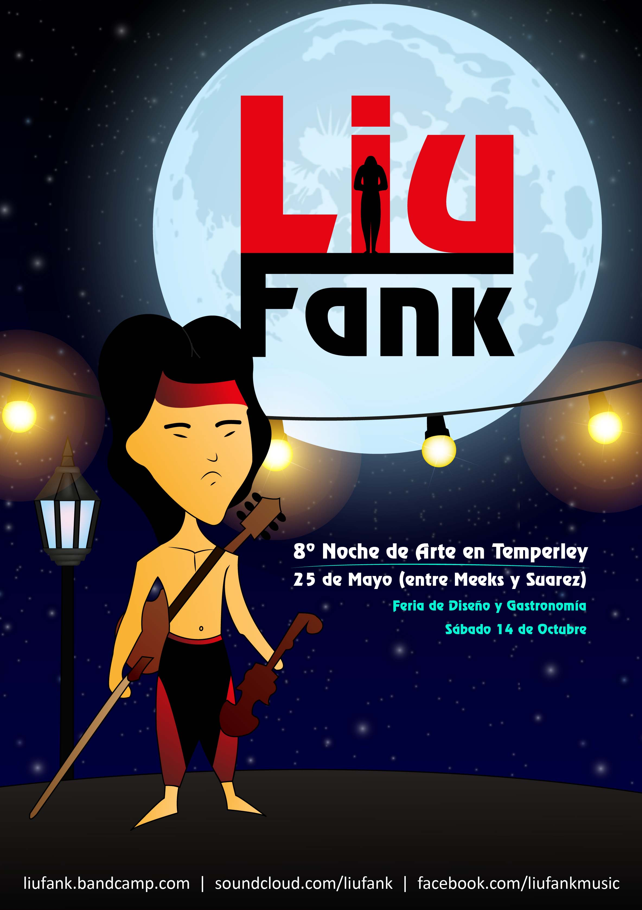
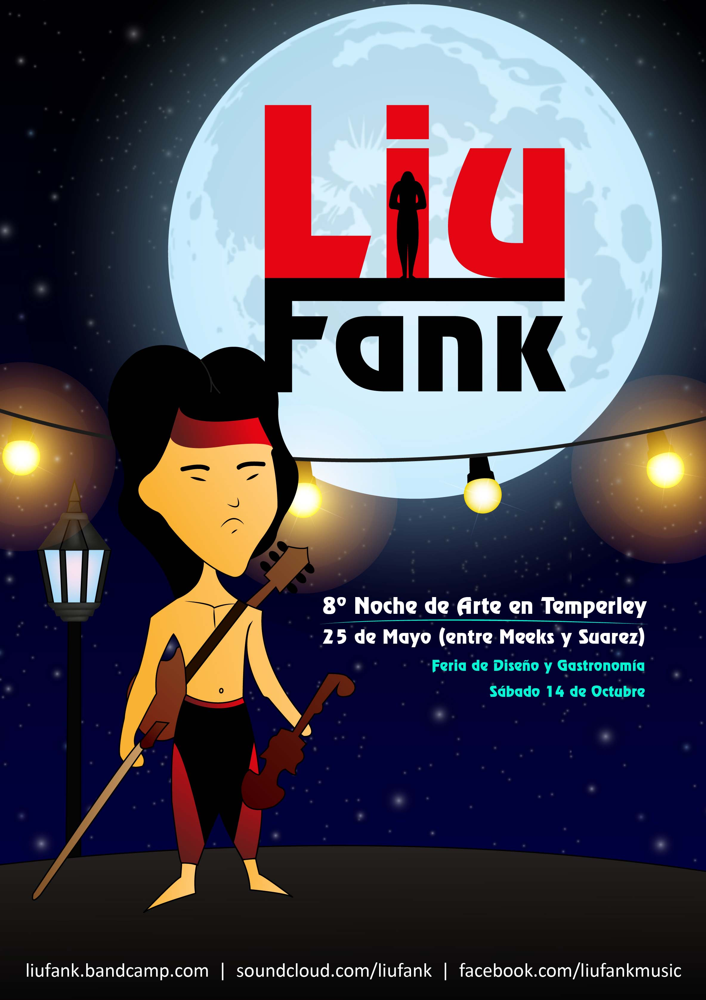

Universidad Nacional de Lanús - Buenos Aires - Argentina
Diseño
Henn Kim es una ilustradora coreana a la que le podríamos aplicar perfectamente la premisa “menos es más”, ya que su trabajo, de factura minimalista, contiene un sinfín de significados que el espectador descubre a veces de un simple vistazo, y otras tras una cuidada reflexión. Kim vive y trabaja en Seúl, y su técnica, totalmente tradicional, nos transporta a través de un mundo lleno de sentimientos y emociones. Bolígrafos, lápices y tinta son las herramientas con las que Henn Kim construye un universo más cercano de lo que creemos, pues en sus ilustraciones ella nos muestra situaciones cotidianas que vivimos o imaginamos y con las que seguramente acabaremos asociándonos en más de una ocasión. Su trabajo parece una representación de poesía dadaísta mezclada con la interpretación de los sueños de Freud para permitir que el inconsciente se exprese.


Fotografías


Video
Remake del trailer de la película The kid (el pibe) de Charlie Chaplin. SINOPSIS: Una mujer joven, Edna, acaba de dar a luz a un hijo no deseado. Con el dolor de su alma, decide dejar al niño dentro del elegante automóvil de cierta familia adinerada, junto a una nota en la que brevemente le pide que se haga cargo de su hijo. Pero unos delincuentes que se roban el auto, dejan al bebé abandonado en la esquina de un barrio marginal. Es allí donde lo encuentra un alegre, despreocupado e inocente vagabundo, quien, si bien en varias ocasiones intenta deshacerse de semejante responsabilidad, se compadece de él y decide adoptarlo y asumir su crianza.
Flyers
 
